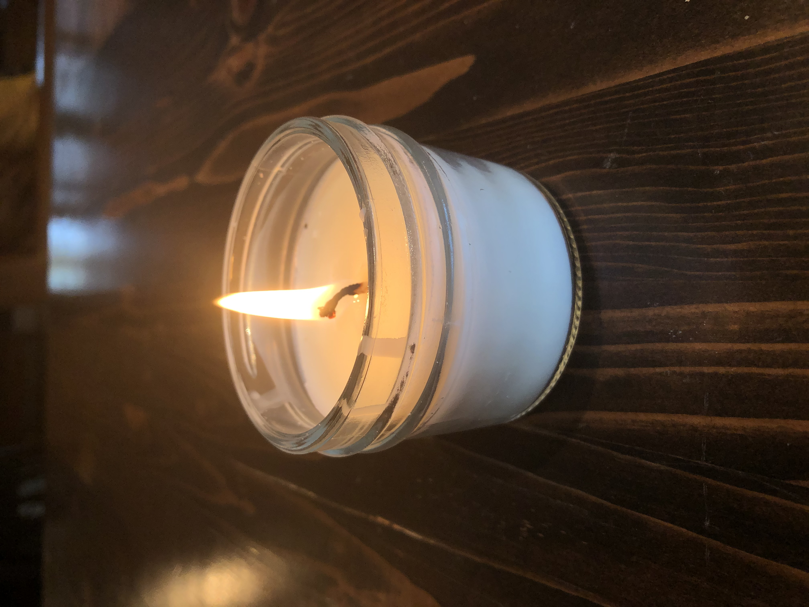
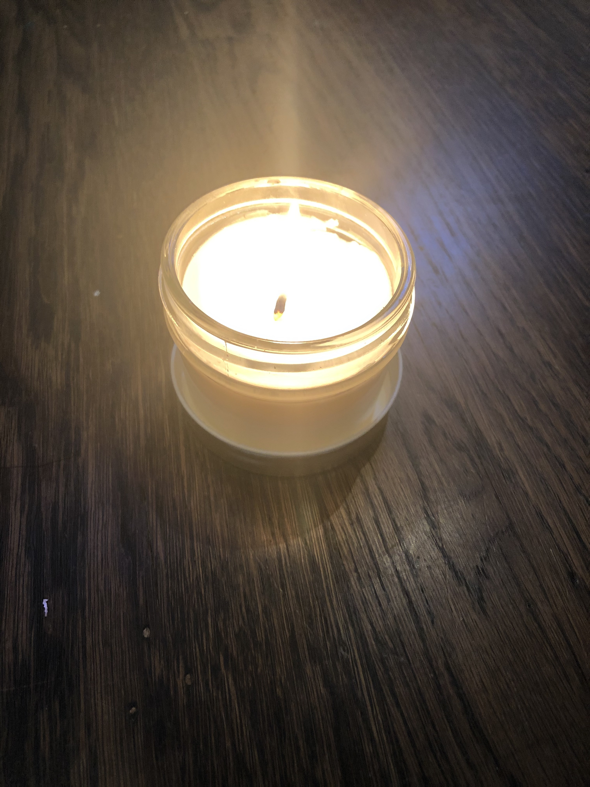
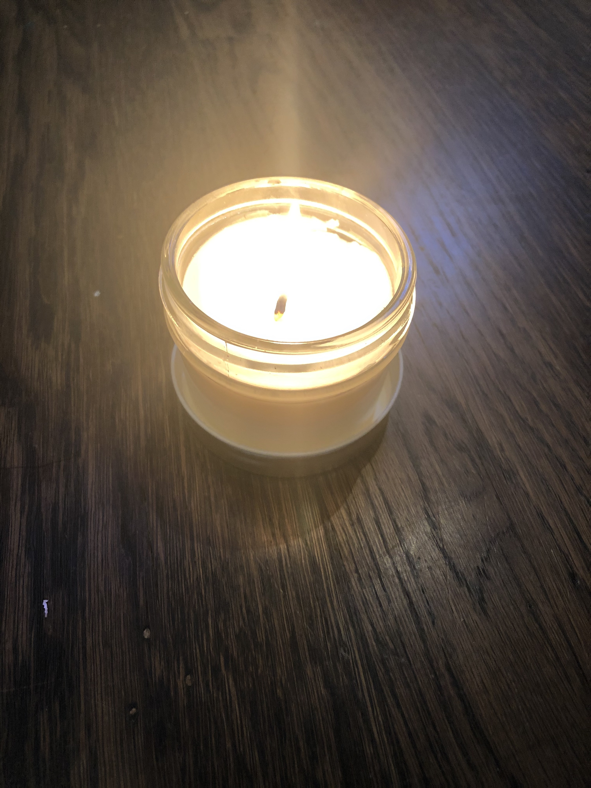

Welcome to Firefly, a 100% vegan candel company. Our candels are here to help you calm down in stressful times. They come in varios scents including rosemary-lavender, peppermint, rose, tea tree, orange and lavender.
 

Soy wax candles are good for the enviroment and you. Unlike paraffin wax, soy wax is a renewable recource. Parafin wax is made from petroleum which has to be mined and causes habitat destruction. Also unlike beeswax soy wax is vegan. Bees need beeswax for making honey and caring for their young. Without bees wax bees imune system is weakend making them more susceptible to disese and death. Soy wax candles also have a longer burn time than paraffin candles and are frangreced with natural essential oils.